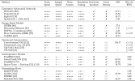

Bond-Taylor, Willcocks et al., "Deep Generative Modelling: A Comparative Review of VAEs, GANs, Normalizing Flows, Energy-Based and Autoregressive Models" in IEEE Transactions on Pattern Analysis and Machine Intelligence (TPAMI)

Definition: a=b
Quality content here
Generative model
Title
\[\begin{aligned}
p(\mathbf{x}) & = \sigma(y-x) \\
p(\mathbf{x}) & \approx \mathbb{E}_{\mathbf{x}\sim w} x - y - xz \\
p(\mathbf{x}) & = -\beta z + xy
\end{aligned} \]